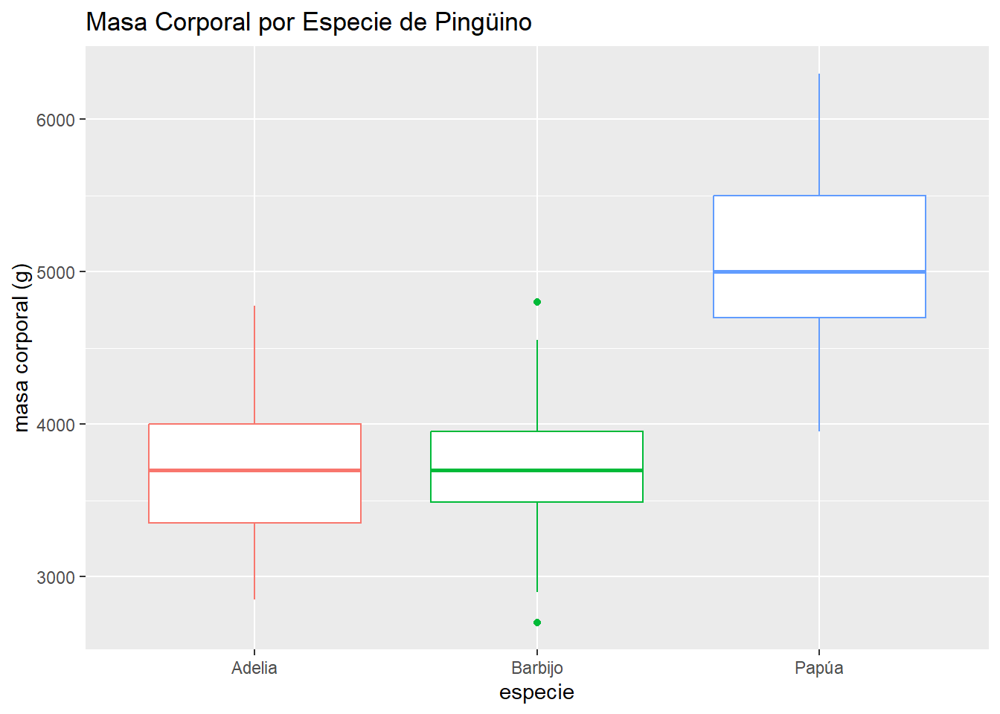
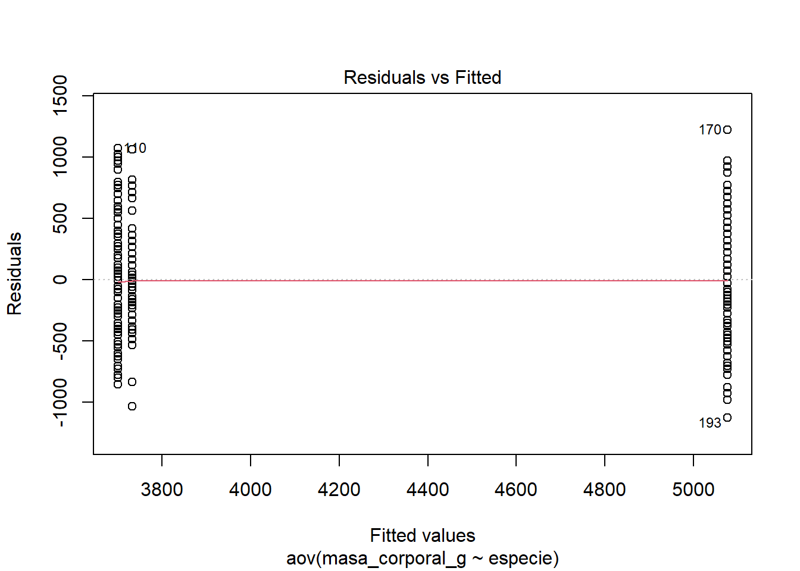

Ocupa las pruebas Anova/Kruskal-Wallis para analizar si existe diferencias significativas entre un grupo y otro. O sea, debería ser una prueba entre niveles o grupos específicos. No deba usar una Anova para analizar un variable numérico.
¿Por qué? Porque el proceso de hacer una anova (análisis de varianza) es tomar los promedios de su variable de interés por cada grupo y compararlas para decidir si hay una diferencia que es mas que lo que se pasa naturalmente o por casualidad.
Por ejemplo: Con los datos de pingüinos, supone que quiere probar si una especie u otra tiene una masa corporal más grande que cualquiera otra especie. Acá una anova se sirve con masa corporal con su variable de respuesta y especie con su variable explicativa. Porque especie es un grupo, o sea, que todos los pingüinos son de una de las tres especies, podemos usar una anova.
library(datos)library(tidyverse)library(vegan)library(rstatix)library(ggpubr)pinguinos <- datos::pinguinospinguinos %>%ggplot(aes(x=especie, y=masa_corporal_g, color=especie))+geom_boxplot()+labs(x="especie", y="masa corporal (g)")+theme(legend.position ="none")+ggtitle("Masa Corporal por Especie de Pingüino")

Pero, si quiere analizar si el largo pico cambia por la masa corporal, no puede usar una anova porque la masa corporal no tiene niveles, cada masa es distinto. Su variable explicativa debe ser categórica. Una prueba, si no sea seguro, es hacer un boxplot con su variable explicativa como el y, e su respuesta como x. Si no puedas, no usa una anova.
Suposiciones (ANOVA)
1. Diseño del estudio: independencia
No puede ser relaciones entre observaciones entre grupos. Por ejemplo, no pueda tener un pingunio individual que tiene datos por la isla B y la isla A, debe ser una o otra.
Acá tenemos dos outliers, pero niguno son extremos, puede elegir a quedarlos o eliminarlos.
3. Probar normalidad por cada grupo/nivel o con todo
Pueda hacer esta prueba antes o después de su ANOVA y en grupos dividios o juntos.
Por los dos, había un método numérico y un gráfico. El numérico es más sensible, y a veces puede ser demasiado sensible (especialmente con mayores cantidades de datos), entonces es recomendable usar los dos.
Versión antes:
Debería probar normalidad por los grupos con la prueba de shapiro (valor P > 0.05 es normal)
Ej: Pruebo de Shapiro
pinguinos %>%# con datos pinguinosgroup_by(especie)%>%# niveles/grupos = especie (3 grupos)shapiro_test(masa_corporal_g) # variable respuesta: masa corporal
# A tibble: 3 × 4
especie variable statistic p
<fct> <chr> <dbl> <dbl>
1 Adelia masa_corporal_g 0.981 0.0324
2 Barbijo masa_corporal_g 0.984 0.561
3 Papúa masa_corporal_g 0.986 0.234
Desde la prueba de Shapiro, el espeice ‘Adelia’ no es normal, pero los otros dos si son.
Ej: QQplot
El QQplot se muestra los valores y su correlación con la distribución (o curva) normal. Un QQplot con datos normales tiene los puntos mas o menos siguiendo la línea.
Puede ver que Adelia y Papua tienen variaciones a la partida y el fin, pero son más o menos con la línea. Puede seguir con la ANOVA, pero con caución, o puede usar el Kruskal-Wallis. Pero la ANOVA si tiene poquito más flexibilidad de, por ejemplo, los modelos lineales generales (glm), entonces con variación menor (como acá) todavía puede usar. Pero si no este seguro, usar el Kruskal-Wallis.
Versión después
Es posbile usar ‘lm’ (modelo lineal) o ‘aov’ (anova) acá. Resulta exactamente lo mismo.
# TILDE es 'ctl + alt + ]'normmod <-lm(data=pinguinos, masa_corporal_g ~ especie)ggqqplot(residuals(normmod))
Desde esta prueba anterior, es normal (el valor P es un poquito arriba del 0.05), entonces vamos con ANOVA.
4. Homogeneidad de la varianza
Sus grupos también debería cumplir con la homogeneidad de la varianza. O sea, todos sus grupos deberían tener niveles de varianza similares. Si haya un grupo que tiene una varianza tan larga y los otros muy poco, es probable que este grupo va a cambiar sus resultados.
Es importante probar la homogeneidad de la varianza antes de hacer su ANOVA.
De nuevo hay un método numérico y un método visual.
visual
Con el grafico, debería ser sin relaciones entre los grupos (o sea, random).
plot(norm, 1)

Acá no aparece random, sino que con una curva.
Prueba de Levene
La prueba de Levene se usa para probar la homogeneidad de la varianza también (valor P > 0.05 está bien).
# A tibble: 1 × 4
df1 df2 statistic p
<int> <int> <dbl> <dbl>
1 2 339 5.12 0.00645
No se cumplen los datos con la suposición de la homogeneidad de la varianza. Entonces, deberíamos usar Kruskal-Wallis, intentar a transformar los datos, o usar la Welch ANOVA (welch_anova_test)
Elegir su típo de modelo (un modelo explicativa)
Hacer su modelo
La gramática de modelos casi siempre es así: prueba(data= datos, variable respuesta ~ variable(s) explicativa)
Df Sum Sq Mean Sq F value Pr(>F)
especie 2 146864214 73432107 343.6 <2e-16 ***
Residuals 339 72443483 213698
---
Signif. codes: 0 '***' 0.001 '**' 0.01 '*' 0.05 '.' 0.1 ' ' 1
2 observations deleted due to missingness
# invalido porque no se cumplen con la homogeneidad de la varianza, solo un ejemplo de comó hacerseMasaEsKW <-kruskal.test(data=pinguinos, masa_corporal_g ~ especie)MasaEsKW
Kruskal-Wallis rank sum test
data: masa_corporal_g by especie
Kruskal-Wallis chi-squared = 217.6, df = 2, p-value < 2.2e-16
Prueba post-hoc
En el ejemplo arriba, puede ver que había distinciones entre los promedios, pero no es claro cual grupo tiene valores menores/mayores. Para adivinar eso, ocupa una prueba ‘post-hoc’ o después de hecho. Estas pruebas producir una tabla con comparaciones de cada promedio con cada otro promedio.
Pueda ver que los individuos del especies Adelia y Barbijo son significativamente distino del los de Papúa.
Recuerda el boxplot original:
pinguinos %>%ggplot(aes(x=especie, y=masa_corporal_g, color=especie))+geom_boxplot()+labs(x="especie", y="masa corporal (g)")+theme(legend.position ="none")+ggtitle("Masa Corporal por Especie de Pingüino")
Warning: Removed 2 rows containing non-finite outside the scale range
(`stat_boxplot()`).
Ahora, es correcto decir que los pingüinos de la especie Papúa tienen una masa corporal significativamente más grande de los del Adelia o Barbijo.
Por Kruskal-Wallis, el post-hoc es la prueba de Dunn (dunn_test()). Por ANOVA normal es la prueba de Tukey (tukey_HSD()). Por el Welch ANOVA es la prueba de Games-Howell (games_howell_test())
Otros opciónes
Prueba
Uso
ANOVA bidirecional
Con dos variables categoricas explicativas
ANCOVA (análisis de covarianza)
Con 1/2 variables categoricas explicativas y una covarianza númerica
MANOVA
Probar efectos de las variables explicativas en dos+ variables respuestas
Prueba T (t-test)
Comparación entre promedios de solo dos grupos/niveles